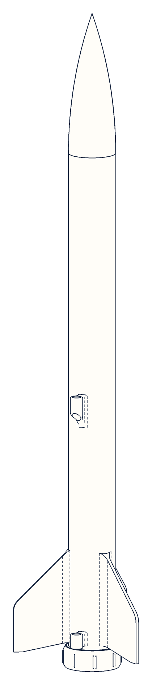

After printing: build, rig and fly
Assembly guide
Keep these instructions for future reference
You printed a rocket. Now let's fly it!
This guide is for rockets made with Rocket Builder (rocket.quiverdesignworks.net). It shows what to do after the parts come off the printer: put them together, tie on the parachute, add a motor and launch.
Read each step all the way through before you start it. Work with a grown-up. Steps marked Adult step are for the grown-up only.
The drawings show two sizes of rocket: an 18 mm (M18) rocket with one body piece, and a taller 24 mm (M24) one with two. Yours may have more or fewer body pieces. Drawings are not to scale.
What you need Not in the box: motor, igniter, launch pad and controller
Fine sandpaper220–400 grit
Hobby knifeadults only
Medium super glueCA, like Starbond Medium
Rulerin mm
Pencilto mark the balance point
Scissorscord, wadding
Masking tapefit fixes
Stiff wireto push the cord through
Rubbing alcoholcleans joints before gluing
What happens in a flight
- The igniter lights the motor. The rocket slides up the launch rod.
- The motor burns out. The rocket coasts up to the top of its flight.
- The motor's ejection charge puffs gas up the body. It pushes the wadding, the parachute and the nose out of the top.
- The nose stays tied to the body by the shock cord. The parachute opens. Everything floats down together.
How the parts hold together
- Fins are printed on the aft section. No fin gluing!
- Body pieces slide together on short shoulders. You glue these joints so they stay shut.
- The nose slides in too, but is never glued. It must pop off.
- The motor pushes against a ring at the top of its tube. The motor cap screws onto the tail and holds it in.
Safety first
Model rocket motors and igniters are handled by an adult. Fly only in a big open field, with a launch pad and an electric launch controller, and follow the National Association of Rocketry (NAR) Model Rocket Safety Code (summary on page 8).
Steps at a glance
1–3 Build p. 3
Clean up, test-fit and glue the body.
Clean up, test-fit and glue the body.
4–8 Recovery p. 4–5
Tie on the cord and parachute, fold, pack.
Tie on the cord and parachute, fold, pack.
9–12 Motor and pad p. 6–7
Adult steps: motor, cap, igniter, launch.
Adult steps: motor, cap, igniter, launch.
My rocket fill this in
NameBuilderMotor size
Best motorParachuteBalance point
Copy these from your rocket's report in Rocket Builder or from build_notes.txt in your download. The balance point is the CG, in mm from the nose tip.

Rocket Builder by Quiver Design Works · Assembly guiderocket.quiverdesignworks.net1